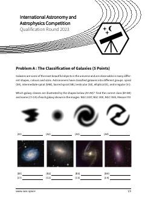

IAXalqaro astronomiya va astrofizika tanlovi uchun saralash bosqichi masalalari to'plami.
Ushbu hujjat 2023-yilgi Xalqaro astronomiya va astrofizika tanlovining saralash bosqichi uchun mo'ljallangan masalalar to'plamidir. Unda galaktikalar tasnifi, yorug'lik tezligi, orbital mexanika, yulduzlararo masofalar va qorong'u energiya kabi mavzular bo'yicha nazariy va amaliy savollar keltirilgan.